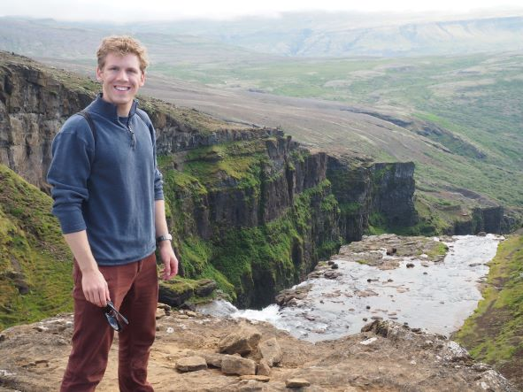

About

I’m a mathematician, philosopher, writer... hopeful inventor?
My interests are very broad, crossing the boundaries of STEM and the humanities, academia and industry. Currently I serve as an Assistant Professor in the Center for Applied Mathematics at UVA.
I studied under Raphaёl Rouquier for my PhD at UCLA, finishing in 2023. In my dissertation in higher quantum algebra I developed a tensor 2-product for 2-representations of Lie algebras. I am hoping that this operation will yield a totally new construction of Khovanov homology, and perhaps one day lead to an interesting 4D TQFT. I also have math research projects about quantum group asymptotics and Calogero Moser cells.
Since 2023 my attention has been focused primarily on my teaching and the development of a major pedagogy initiative called xTensiv. This project aims to replace math textbooks with a “learnable library,” a web-scale database of text and problems equipped with learn-order data, allowing computer generation and graphical navigation of all possible and feasible learning pathways through the library. The purpose is to provide for efficient goal-directed learning and effective exploratory learning.
I am nearly finished with my first book, G. W. Leibniz, The Philosophy of Situation: ‘Geometric Characteristic’ and Other Essays on Analysis Situs. This book provides translation of, and commentary upon, Leibniz’s analysis situs project.
I am slowly working on publishing additional writing in philosophy from my years in Oxford, and I have a series of essays planned out about the nature of mathematics.
Bio Timeline
July: Park City / IAS summer school: Quantum Field Theory and Manifold Invariants.
February: Began study under Raphaël Rouquier.
January: ESI Vienna workshop: Categorification in Quantum Topology.
Spring: Budapest Semesters in Mathematics.